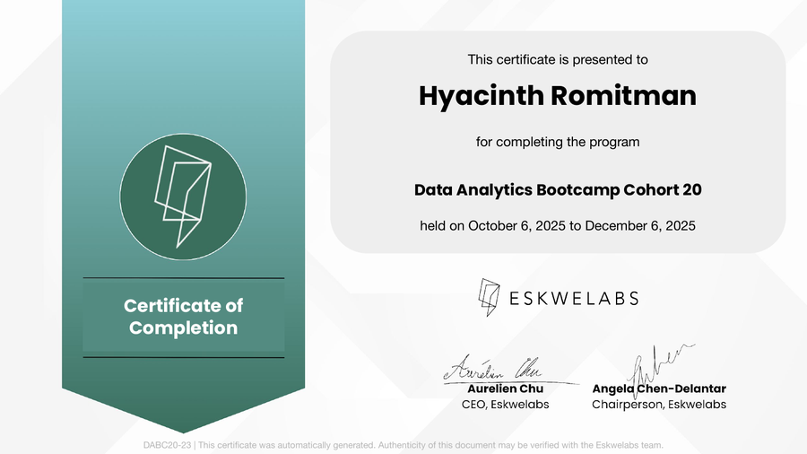
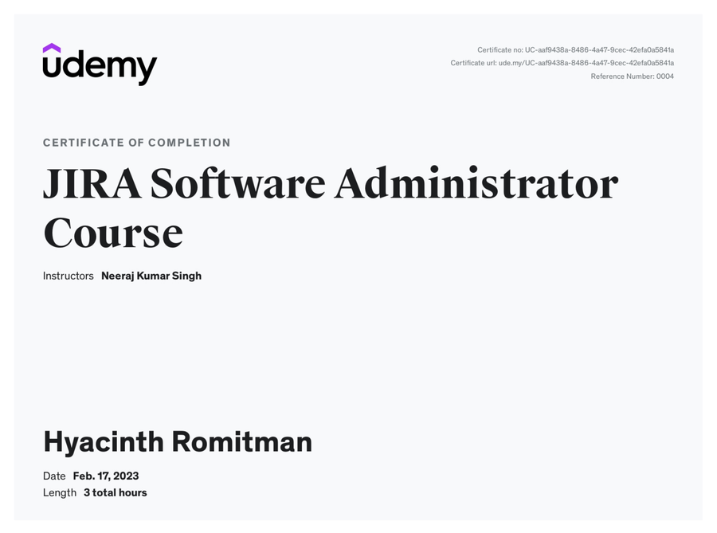
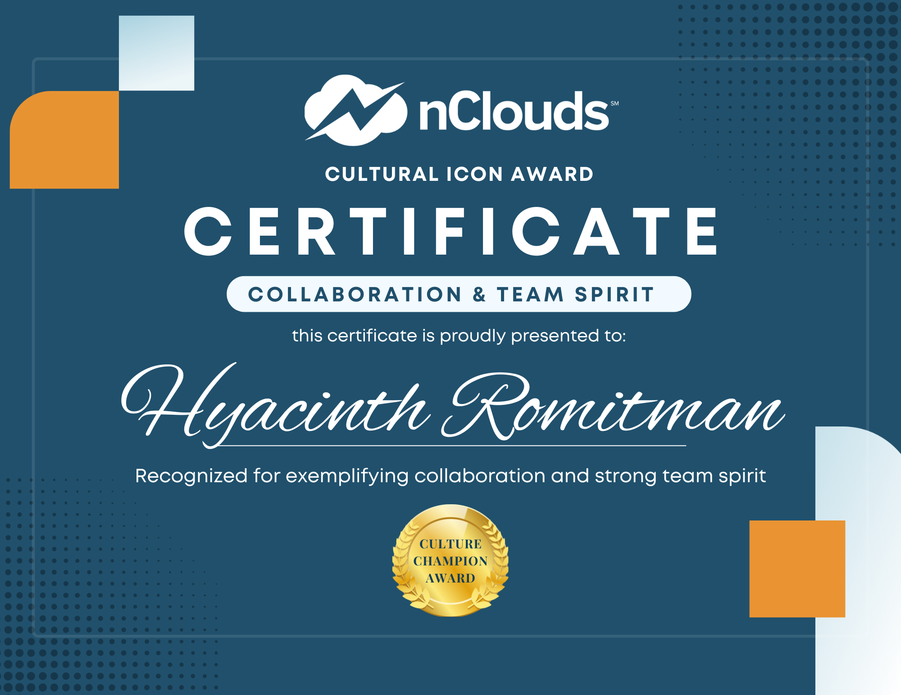

Project Operations Coordinator
I support project teams by improving workflows, coordinating day-to-day operations, and keeping projects organized and on track. My work spans project coordination, process improvement, automation, and reporting.
- Project Operations — Coordinated onboarding, timelines, deliverables, team capacity, and issue resolution across projects.
- Process Improvement — Built automated workflows and developed SOPs to reduce manual work and standardize processes.
- Systems & Migration — Facilitated JIRA migrations across multiple projects while maintaining data accuracy and workflow continuity.
- Reporting & Insights — Prepared project, budget, and team performance reports to support planning and decision-making.
Administrative Assistant
Supported business operations across leadership, sales, and procurement, with a focus on coordination, documentation, research, and process organization.
- Business Operations — Coordinated with cross-functional teams to support day-to-day operations and business activities.
- Business Development — Conducted market research and lead generation to identify potential opportunities.
- Proposals & Documentation — Prepared and managed business proposals and bid-related documentation, ensuring accuracy and timely submission.
- Process & Reporting — Built tracking and reporting tools and implemented a structured digital filing system to improve visibility, organization, and accessibility.

Data Analytics Bootcamp
An intensive, project-based program covering Power BI, Tableau, SQL, and AI-assisted Python. Built interactive dashboards and visualizations, practiced data cleaning and exploratory analysis on real datasets, and applied data storytelling principles to turn findings into actionable recommendations — working in sprint-based, team-driven projects throughout.
View full certificate →
JIRA Software Administrator
Covered JIRA administration fundamentals — configuring projects, workflows, permission schemes, and boards. Built the technical foundation later applied on the job to lead real JIRA migrations for multiple client projects.
View full certificate →
Cultural Icon Award — Collaboration & Team Spirit
Recognized for exemplifying collaboration and strong team spirit.
View full award →I would like to nominate Cinth, our Project Operations Coordinator from the Admin Team. Though naturally quiet and reserved, she consistently demonstrates exceptional productivity, reliability, and professionalism. She is always willing to lend a helping hand, openly shares her knowledge, and never hesitates to support her teammates whenever needed. Her visibility, responsiveness, and collaborative spirit make her an invaluable part of the team. Cinth proves that leadership and impact don't always come from the loudest voices, but from consistent actions and genuine dedication. Kudos to her for being such a dependable and supportive colleague.
Thank you for leading the team and making sure we had progress before the next session. All the best, Yang!
B.S. Psychology
Mindanao State University — Iligan Institute of Technology